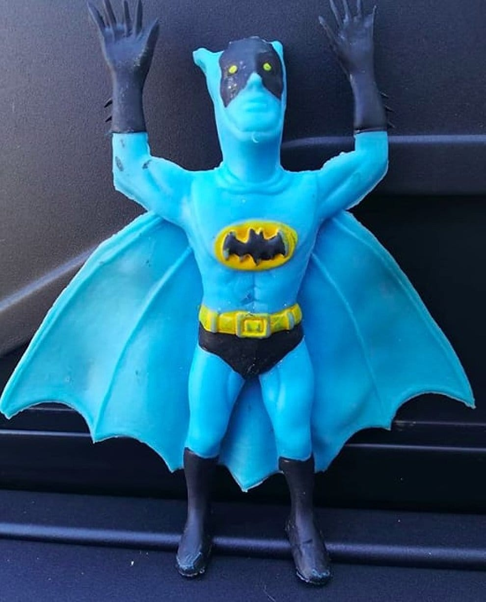

Articulo 1
Articulo 2

☻Descripcion☻
Batman Blue
Cuenta con una altura de 25 cm, una capa de tela azul, cuello,
hombros, piernas y muñecas totalmente móviles, este juguete de Batman™
permite a los niños representar sus propias aventuras de acción en Gotham City™